Roteiro: Projeto Final com o tema AWS RDS¶
- Aluno: Lorran Caetano Machado Lopes
- Curso: Engenharia da Computação
- Semestre: 6
- Contato: lorrancml@al.insper.edu.br
- Ano: 2023
Pré-requisitos¶
Para seguir esse tutorial é necessário:
- Ubuntu > 20.0 ou WSL2
- Conta da AWS: uma conta com permissões de administrador.
- Terraform
Info
Você pode se cadastrar em uma conta da AWS aqui:
Caso não tenha o Terraform instalado em sua máquina, você pode obtê-lo aqui:
Motivação¶
Ao concluir esse roteiro, teremos provisionado uma arquitetura que contem uma função Lambda que grava dados em um dos dois banco de dados do Amazon RDS (clientes ou produtos), por meio da leitura de dados de uma fila do Amazon SQS sempre que uma mensagem é adicionada. Ao usar o Lambda para acessar seu banco de dados, você pode ler e gravar dados em resposta a eventos. Sua função e instância de banco de dados também se escalam automaticamente para atender a períodos de alta demanda. Além disso, será enviado um e-mail para um endereço definido a fim de notificar quando o banco de dados for alterado.
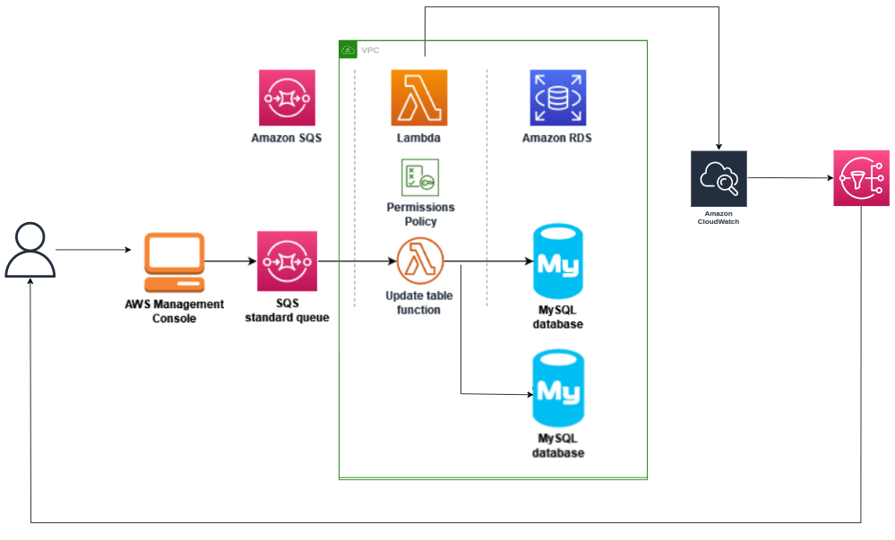¶
AWS¶
A Amazon Web Services (AWS) é a plataforma de nuvem mais adotada e mais abrangente do mundo, oferecendo mais de 200 serviços completos de datacenters em todo o mundo. Milhões de clientes, incluindo as startups que crescem mais rápido, as maiores empresas e os maiores órgãos governamentais, estão usando a AWS para reduzir custos, ganhar agilidade e inovar mais rapidamente.
Para conseguir interagir com os serviços e funções que a AWS provém, por meio de IaC (Infrastructure as Code), é necessário obter chaves de acesso, que permitam o gerenciamento e provisionamento dos recursos que desejamos alocar na nuvem.
Guarde a chave de acesso para criar variáveis de ambiente antes de iniciar o Terraform, na fase final do roteiro.
RDS¶
O Amazon RDS (Relational Database Service) é um serviço de banco de dados gerenciado da AWS que permite criar e gerenciar bancos de dados relacionais, como MySQL, PostgreSQL, Oracle, SQL Server, entre outros. O RDS gerencia tarefas como provisionamento de hardware, instalação de software, backup e recuperação, bem como monitoramento e dimensionamento automático.
Funções AWS Lambda¶
O AWS Lambda é um serviço de computação sem servidor e orientado a eventos que permite executar código para praticamente qualquer tipo de aplicação ou serviço de backend sem provisionar ou gerenciar servidores. É possível acionar o Lambda a partir de mais de 200 serviços da AWS e aplicações de software como serviço (SaaS). Nesse roteiro, você irá usar o Lambda para abrir uma conexão com uma instância de banco de dados do Amazon RDS e para realizar operações de criação e leitura em um banco de dados do Amazon RDS.
AWS SQS¶
O Amazon Simple Queue Service (AWS SQS) é um serviço de mensagens gerenciadas pela Amazon Web Services (AWS) que permite que diferentes componentes de um sistema se comuniquem entre si de forma assíncrona. Ele funciona como uma fila virtual, onde as mensagens são armazenadas até que sejam processadas pelos consumidores. O SQS garante a entrega das mensagens, mesmo em situações de alta demanda ou falhas temporárias, tornando-o uma solução escalável e confiável para sistemas distribuídos.
Amazon Simple Notification Service (SNS)¶
O SNS é um serviço de mensagens e notificação da AWS que permite enviar mensagens para diferentes tipos de endpoints como emails, mensagens de texto(SMS), URLs entre outros. Além disso, você pode configurar o acesso para quem pode publicar e para quem pode se inscrever no tópico.
Amazon CloudWatch¶
O Amazon CloudWatch é um serviço de monitoramento e observabilidade oferecido pela Amazon Web Services (AWS). Ele permite que você colete, monitore e analise métricas, logs e eventos gerados pelos recursos e aplicativos em execução na AWS. O CloudWatch oferece uma visão abrangente do desempenho e saúde dos seus sistemas, permitindo que você identifique problemas, tome decisões baseadas em dados e tome ações corretivas.
Iniciando nossa infraestrutura¶
Crie uma pasta para organizar nossos arquivos chamada terraform:
mkdir terraform
cd terraform
Crie também um arquivo main.tf. Nele, criaremos todos os nossos recursos.
touch main.tf
Primeiramente, iremos criar duas instâncias de banco de dados do Amazon RDS, uma para clientes e outra para produtos. Para tanto, podemos inserir o trecho abaxaixo no nosso main.tf:
# Cria uma instância de banco de dados do Amazon RDS - Clientes(ID, Nome)
resource "aws_db_instance" "clients" {
engine = "mysql"
identifier = "mysqlforlambdaterraformclients"
allocated_storage = 5
max_allocated_storage = 100
instance_class = "db.t2.micro"
publicly_accessible = false
db_name = "ExampleDB"
username = "admin"
password = "senhaDoBancoDeDados"
skip_final_snapshot = true
vpc_security_group_ids = [aws_default_security_group.default.id]
}
# Cria uma outra instância de banco de dados do Amazon RDS - Produto(ID, Nome, Price)
resource "aws_db_instance" "products" {
engine = "mysql"
identifier = "mysqlforlambdaterraformproducts"
allocated_storage = 5
max_allocated_storage = 100
instance_class = "db.t2.micro"
publicly_accessible = false
db_name = "ExampleDB"
username = "admin"
password = "senhaDoBancoDeDados"
skip_final_snapshot = true
vpc_security_group_ids = [aws_default_security_group.default.id]
}
 Você pode alterar o db_name, username e password pelos valores que você deseja para os seus banco de dados.
Você pode alterar o db_name, username e password pelos valores que você deseja para os seus banco de dados.
Agora, antes de criar sua função do Lambda, você deve criar um perfil de execução para dar à sua função as permissões necessárias. Para este roteiro, o Lambda precisa de permissão para gerenciar a conexão de rede com a Amazon VPC contendo sua instância de banco de dados, para pesquisar mensagens de uma fila do Amazon SQS e para criar grupos de logs, fluxos de logs e enviar eventos de logs.
Faremos isso pelo IAM. Vamos adicionar a criação no main.tf.
# Código já existente omitido
# ...
# Cria um perfil de execução de função
resource "aws_iam_role" "role" {
name = "lambda-vpc-sqs-role-terraform"
assume_role_policy = jsonencode({
Version = "2012-10-17"
Statement = [{
Action = "sts:AssumeRole"
Effect = "Allow"
Principal = {
Service = "lambda.amazonaws.com"
}
}]
})
}
# Cria uma policy
resource "aws_iam_policy" "policy" {
name = "necessary-policy"
policy = jsonencode({
"Version" : "2012-10-17",
"Statement" : [
{
"Sid" : "VisualEditor0",
"Effect" : "Allow",
"Action" : [
"ec2:CreateNetworkInterface",
"ec2:DescribeNetworkInterfaces",
"ec2:DeleteNetworkInterface"
],
"Resource" : "*"
},
{
"Effect" : "Allow",
"Action" : [
"sqs:ReceiveMessage",
"sqs:DeleteMessage",
"sqs:GetQueueAttributes",
"sqs:SendMessage",
"sqs:GetQueueUrl"
],
"Resource" : "*"
},
{
"Effect" : "Allow",
"Action" : [
"logs:CreateLogGroup",
"logs:CreateLogStream",
"logs:PutLogEvents"
],
"Resource" : "arn:aws:logs:*:*:*"
}
]
})
}
#associamos a policy à função IAM
resource "aws_iam_role_policy_attachment" "example" {
policy_arn = aws_iam_policy.policy.arn
role = aws_iam_role.role.name
}
Vamos agora criar o pacote de implantação do Lambda.
Primeiramente, vamos criar uma pasta que servirá para a instalação da biblioca que usaremos no código Python e o arquivo em si, que serão compactados posteriormente.
Rode o comando abaixo no terminal para criar a pasta com o nome source_lambda:
mkdir source_lambda
pip install --target source_lambda pymysql
Feito isso, vamos criar o nosso código para a função Lambda.
O exemplo de código Python a seguir usa o pacote PyMySQL para abrir uma conexão com seu banco de dados. Na primeira vez que você invoca sua função, ela também cria uma nova tabela chamada Customer e uma chamada Product, cada uma em um DB. A primeira usa o seguinte esquema, em que CustID é a chave primária:
Customer(CustID, Name)
E a segunda usa o seguinte, onde ProdID é a chave primária:
Product (ProdID, Name, Price)
A função também usa a PyMySQL para adicionar registros a essa tabela. A função adiciona registros usando os IDs de clientes/produtos e nomes/e ou preços especificados nas mensagens que você adicionará à sua fila do Amazon SQS.
Observe que o código cria a conexão com seu banco de dados fora da função do manipulador. A criação da conexão no código de inicialização permite que a conexão seja reutilizada por invocações subsequentes de sua função e melhora o desempenho.
Adicione o novo trecho abaixo no seu main.tf:
# Código já existente omitido
# ...
resource "local_file" "python_script" {
filename = "./source_lambda/lambda_function.py"
content = <<-EOF
import sys
import logging
import pymysql
import json
# rds settings db clients
rds_host_clients = "${aws_db_instance.clients.endpoint}"[:-5]
user_name_clients = "admin"
password_clients = "senhaDoBancoDeDados"
db_name_clients = "ExampleDB"
# rds settings db products
rds_host_products = "${aws_db_instance.products.endpoint}"[:-5]
user_name_products = "admin"
password_products = "senhaDoBancoDeDados"
db_name_products = "ExampleDB"
logger = logging.getLogger()
logger.setLevel(logging.INFO)
# create the database connection outside of the handler to allow connections to be
# re-used by subsequent function invocations.
try:
conn = pymysql.connect(host=rds_host_clients, user=user_name_clients, passwd=password_clients, db=db_name_clients, connect_timeout=5)
except pymysql.MySQLError as e:
logger.error("ERROR: Unexpected error: Could not connect to MySQL instance - clients")
logger.error(e)
sys.exit()
logger.info("SUCCESS: Connection to RDS MySQL instance (clients) succeeded")
try:
conn2 = pymysql.connect(host=rds_host_products, user=user_name_products, passwd=password_products, db=db_name_products, connect_timeout=5)
except pymysql.MySQLError as e:
logger.error("ERROR: Unexpected error: Could not connect to MySQL instance - products")
logger.error(e)
sys.exit()
logger.info("SUCCESS: Connection to RDS MySQL instance (products) succeeded")
def lambda_handler(event, context):
"""
This function creates a new RDS database table and writes records to it
"""
message = event['Records'][0]['body']
data = json.loads(message)
#diferencia se é cliente ou produto
if 'CustID' in data:
CustID = data['CustID']
Name = data['Name']
item_count = 0
sql_string = f"insert into Customer (CustID, Name) values({CustID}, '{Name}')"
with conn.cursor() as cur:
cur.execute("create table if not exists Customer ( CustID int NOT NULL, Name varchar(255) NOT NULL, PRIMARY KEY (CustID))")
cur.execute(sql_string)
conn.commit()
cur.execute("select * from Customer")
logger.info("The following items have been added to the database clients:")
for row in cur:
item_count += 1
logger.info(row)
conn.commit()
return "Added %d items to RDS MySQL table" %(item_count)
else:
ProdID = data['ProdID']
Name = data['Name']
Price = data['Price']
item_count = 0
sql_string = f"insert into Product (ProdID, Name, Price) values({ProdID}, '{Name}', {Price})"
with conn2.cursor() as cur:
#price is float with two decimal places
cur.execute("create table if not exists Product ( ProdID int NOT NULL, Name varchar(255) NOT NULL, Price float(10,2) NOT NULL, PRIMARY KEY (ProdID))")
cur.execute(sql_string)
conn2.commit()
cur.execute("select * from Product")
logger.info("The following items have been added to the database products:")
for row in cur:
item_count += 1
logger.info(row)
conn2.commit()
return "Added %d items to RDS MySQL table" %(item_count)
EOF
}
Info
Repare que o "rds_host" é explicitamente dependente dos resources que criam os bancos de dados. Além disso, o slicing no final é feito pois a propriedade .endpoint retorna a porta ":3306", que a biblioteca pymsql já usa por padrão.
Warning
Use os valores de db_name, username e password pelos que você usou na criação dos databases. Em produção, é recomendado não codificar esses dados em função, mas sim usar o AWS Secrets Manager para armazenar com segurança as credenciais de acesso ao banco de dados.
Agora, temos tudo para criar o nosso .zip para a função Lambda:
# Código já existente omitido
# ...
data "archive_file" "lambda_archive" {
depends_on = [local_file.python_script]
source_dir = "./source_lambda"
output_path = "lambda_function.zip"
type = "zip"
}
Info
Repare que o resource "lambda_archive" é implicitamente dependente do resource que cria o arquivo .py.
Vamos criar nossa função Lambda. Fazemos isso por meio da inserção do resource abaixo:
# Código já existente omitido
# ...
# Cria a função Lambda
resource "aws_lambda_function" "test_lambda" {
filename = "lambda_function.zip"
function_name = "LambdaFunctionWithRDS-terraform"
role = aws_iam_role.role.arn
handler = "lambda_function.lambda_handler"
runtime = "python3.9"
vpc_config {
subnet_ids = aws_default_subnet.default[*].id
security_group_ids = [aws_default_security_group.default.id]
}
depends_on = [ data.archive_file.lambda_archive ]
}
Info
Repare que o resource "test_lambda" é explicitamente dependente do resource que cria o arquivo .zip.
Agora iremos configurar a VPC padrão que é usada pelos bancos de dados e pelo Lambda. Também as mesmas sub-redes para ambos. Além disso, é preciso definir regra de entrada para a porta que os bancos de dados usam (:3306) e regra de saída (deixaremos todas).
# Código já existente omitido
# ...
resource "aws_default_subnet" "default" {
count = 6
availability_zone = element(["us-east-1a", "us-east-1b", "us-east-1c", "us-east-1d", "us-east-1e", "us-east-1f"], count.index)
}
resource "aws_default_security_group" "default" {
vpc_id = aws_default_vpc.default.id
ingress {
from_port = 3306
to_port = 3306
protocol = "tcp"
cidr_blocks = ["0.0.0.0/0"]
}
egress {
from_port = 0
to_port = 0
protocol = "-1"
cidr_blocks = ["0.0.0.0/0"]
}
}
resource "aws_default_vpc" "default" {
}
Agora você deve criar a fila do Amazon SQS que usará para invocar sua função do Lambda:
# Código já existente omitido
# ...
# Cria uma fila do Amazon SQS
resource "aws_sqs_queue" "my_queue" {
name = "LambdaRDSQueue"
}
Agora, iremos criar um mapeamento da origem do evento para invocar sua função do Lambda.
Um mapeamento da origem do evento é um recurso no Lambda que lê itens de um fluxo ou de uma fila e invoca uma função do Lambda. Ao configurar um mapeamento da origem do evento, você pode especificar um tamanho de lote para que os registros do seu fluxo ou da sua fila sejam agrupados em uma única carga útil. Neste exemplo, definiremos o tamanho do lote como 1 para que a função do Lambda seja invocada toda vez que você enviar uma mensagem para sua fila.
# Código já existente omitido
# ...
# Cria um mapeamento da origem do evento para invocar sua função do Lambda
resource "aws_lambda_event_source_mapping" "resource_queue" {
event_source_arn = aws_sqs_queue.my_queue.arn
function_name = aws_lambda_function.test_lambda.function_name
batch_size = 1
}
Precisamos agora criar um sistema para notificar um determinado e-mail quando um registro for inserido no banco de dados.
Para isso, faremos uso do SNS, que pode enviar notificações de diferentes modos. Utilizaremos o e-mail nesse roteiro. Vamos, então, configurá-lo.
Para isso, adicione, no main.tf, o seguinte código:
# Código já existente omitido
# ...
#Criando um tópico de notificações no SNS
resource "aws_sns_topic" "sns_topic" {
name = "LambdaRDSTopic"
}
#variavel email_subscription
variable "email" {
type = string
default = "email_padrao@gmail.com"
}
#Criando uma assinatura no tópico
resource "aws_sns_topic_subscription" "sns_topic_subscription" {
topic_arn = aws_sns_topic.sns_topic.arn
protocol = "email"
endpoint = var.email
}
Vamos agora criar um alarme no Cloudwatch. Ele será o responsável por conectar a geração de logs da nossa função que insere dados nos bancos de dados ao SNS, que notificará o usuário via e-mail.
O alarme que criaremos recebe o ARN do tópico que irá gerar a notificação, filtra o log específico da função Lambda e muda de estado (de OK para ALARM) conforme surgir log.
Para fazer isso, adicionaremos o trecho abaixo no nosso código:
#Criando uma notificação para o tópico
resource "aws_cloudwatch_log_metric_filter" "lambda_log_filter" {
name = "LambdaRDSLogFilter"
pattern = "ERROR"
log_group_name = "/aws/lambda/LambdaFunctionWithRDS-terraform"
metric_transformation {
name = "ErrorCount"
namespace = "Custom/CloudWatchLogs"
value = "1"
default_value = "0"
}
}
resource "aws_cloudwatch_metric_alarm" "lambda_log_alarm" {
alarm_name = "lambda-log-alarm"
alarm_description = "Alarm triggered on CloudWatch Logs"
comparison_operator = "GreaterThanOrEqualToThreshold"
evaluation_periods = "1"
metric_name = "ErrorCount"
namespace = "Custom/CloudWatchLogs"
period = "60"
statistic = "SampleCount"
threshold = "1"
alarm_actions = [aws_sns_topic.sns_topic.arn]
treat_missing_data = "missing"
}
Agora temos tudo para efetivamente usar o Terraform para criar nossa infraestrutura definida em código.
Para isso, certifique-se que você está com o terminal na pasta terraform.
Então, criamos variáveis de ambiente com a chave que criamos no início:
export AWS_ACCESS_KEY_ID=<ID_CHAVE_DE_ACESSO>
export AWS_SECRET_ACCESS_KEY=<CHAVE_SECRETA_DE_ACESSO>
Também vamos exportar a região padrão, que nesse roteiro é "us-east-1":
export AWS_DEFAULT_REGION="us-east-1"
Após isso, vamos iniciar os recursos terraform necessários para provisionar rodando o comando abaixo:
terraform init
Agora veremos o plano de criação desses recursos:
terraform plan
Por fim, realize deploy dos recursos na nuvem:
terraform apply -var="email=seu_email@gmail.com" -auto-approve
Em torno de alguns minutos, se tudo der certo, sua infraestrutura estará criada.
O e-mail cadastrado precisa confirmar que deseja receber notificações: 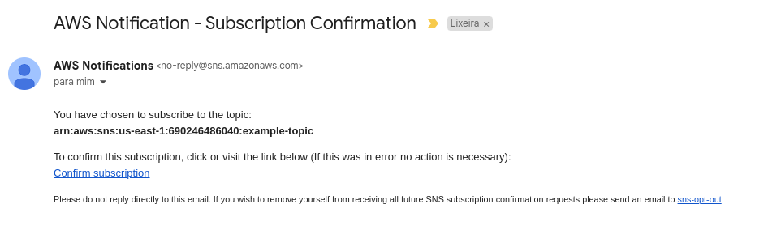
Você pode verificar que o de banco de dados foi criado acessando este link. O esperado é algo como na imagem abaixo: 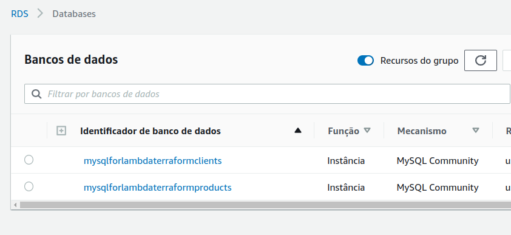
A função do IAM criada pode ser visualizada aqui. Ela possui as permissões definidas. O esperado é algo como na imagem abaixo: 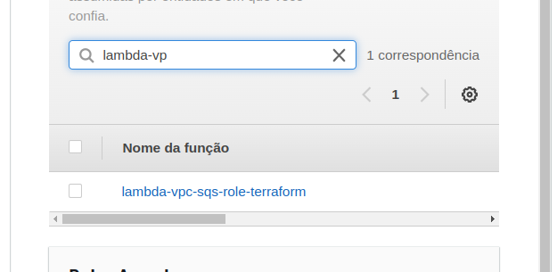
Podemos conferir nossa função Lambda aqui.O esperado é algo como na imagem abaixo: 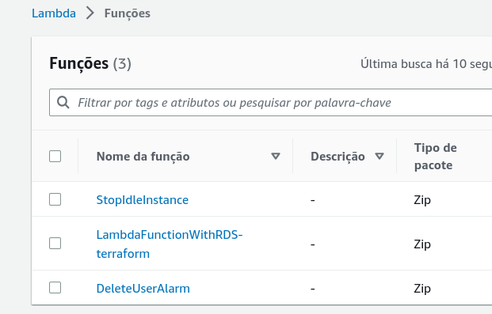
E nossa fila do SQS pode ser acessada aqui. O esperado é algo como na imagem abaixo: 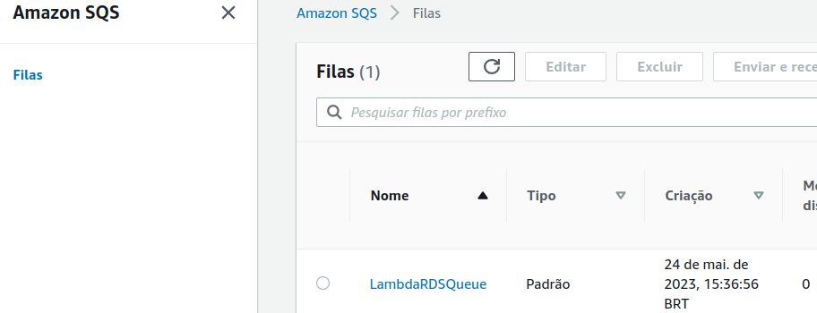
O tópico SNS aqui O esperado é algo como na imagem abaixo: 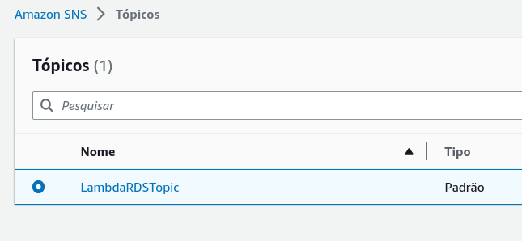
E o alarme aqui. O esperado é algo como na imagem abaixo: 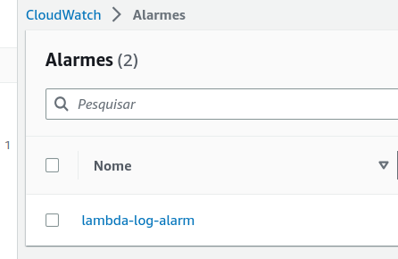
Testando e monitorando a infraestrutura¶
Para testar sua configuração completa, adicione mensagens à sua fila do Amazon SQS usando o console. Siga os passos abaixo:
-
Abra a página Filas do console do Amazon SQS e selecione sua fila
(LambdaRDSQueue). -
Escolha Enviar e receber mensagens e cole o JSON a seguir (exemplo de um cliente) no Corpo da mensagem no painel Enviar mensagem.
{ "CustID": 404, "Name": "Rodolfo Avelino" }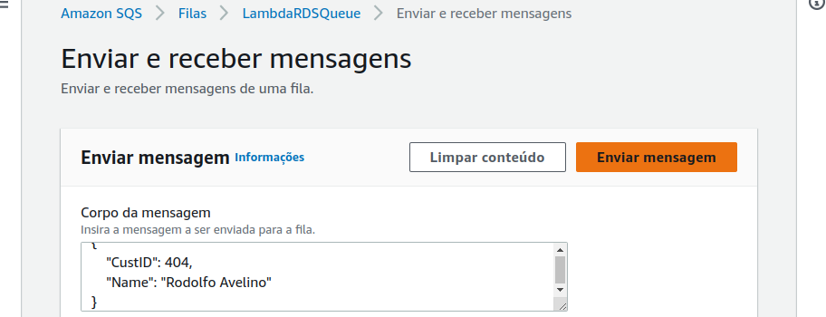
-
Escolha Send Message (Enviar mensagem). Essa ação fará com que o Lambda invoque sua função por meio do mapeamento da origem do evento.
Info
Se quiser testar com um produto, use o JSON abaixo:
{
"ProdID": 404,
"Name": "Router",
"Price": 99.98
}
Para confirmar que o Lambda invocou sua função conforme o esperado, usaremos o CloudWatch Logs para verificar se a função gravou o nome e o ID do cliente na tabela do seu banco de dados, por meio do grupo de logs criado pela função Lambda. Para isso, siga os passos abaixo:
-
Abra a página Grupos de logs do console do CloudWatch e selecione o grupo de logs para sua função
(aws/lambda/LambdaFunctionWithRDS-terraform). -
No painel Fluxos de logs, escolha o fluxo de logs mais recente.
Sua tabela deve conter um registro de cliente, pois houve uma invocação da sua função. No fluxo de logs, você deverá ver mensagens semelhantes às seguintes:
[INFO] The following items have been added to the database clients:
[INFO] (404, 'Rodolfo Avelino')
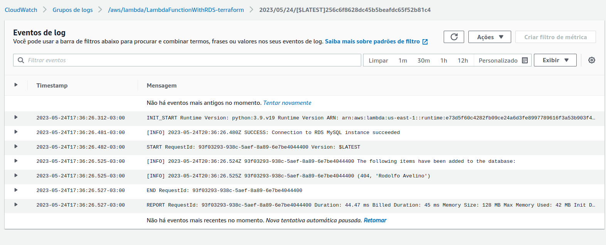
Você também deve ter recebido, ou receberá em poucos minutos, um e-mail com notificação do Alarme, como no exemplo abaixo:
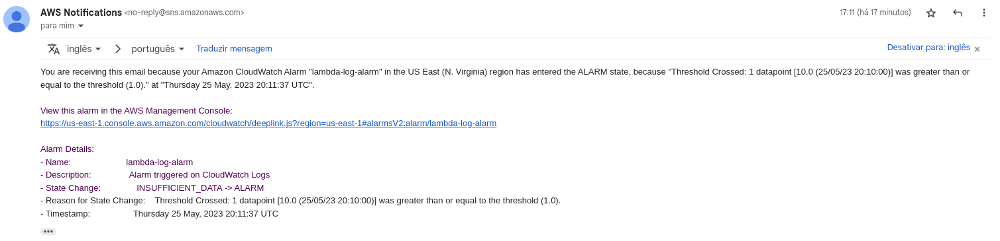
Excluindo a infraestrutura¶
Para excluir os recursos criados para este roteiro, basta executar o comando abaixo:
terraform destroy -auto-approve